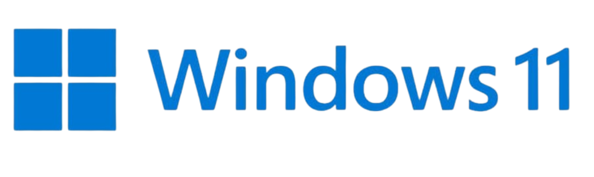
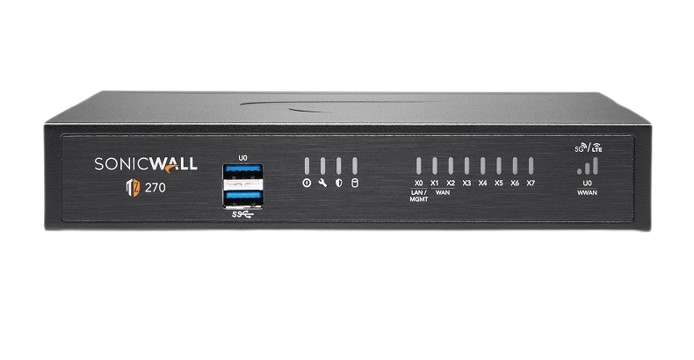

Projekte
↓
Rollout
Im Rahmen eines unternehmensweiten IT-Projekts war ich aktiv am Rollout von Windows 11 bei ESPAS beteiligt. Insgesamt wurden über 400 Arbeitsplätze an drei verschiedenen Standorten erfolgreich umgestellt:
Meine Aufgaben im Projekt:
- Upgrade von Windows 10 auf Windows 11 an allen Benutzerarbeitsplätzen
- Umsetzung von IT-Sicherheitsmaßnahmen (z. B. BitLocker und Gruppenrichtlinien)
- Planung und Vorbereitung der Rollout-Abläufe gemeinsam mit dem IT-Team
- Datensicherung, Migration und Inbetriebnahme der Systeme
- Support und Troubleshooting während und nach der Umstellung
- Direkte Zusammenarbeit mit Endanwender:innen vor Ort
Das Projekt erforderte technisches Know-how, eine strukturierte Arbeitsweise sowie gute Kommunikationsfähigkeiten im Umgang mit Mitarbeitenden und der IT-Abteilung.
Veyon
Veyon ist eine Software zur Fernsteuerung und Überwachung von PCs, die vor allem in Schulungs- und Klassenzimmer-Umgebungen eingesetzt wird.
Weitere Informationen:
Projekt-Dokument ansehenNetzwerk
Im Rahmen eines Schulungsprojekts wurde ein eigenes physisches Netzwerk mit 8 Stockwerken aufgebaut. An jedem Arbeitsplatz standen zwei PCs sowie eine Firewall zur Verfügung. Alle Geräte waren Teil eines gemeinsamen Netzwerks und mussten untereinander kommunizieren können.